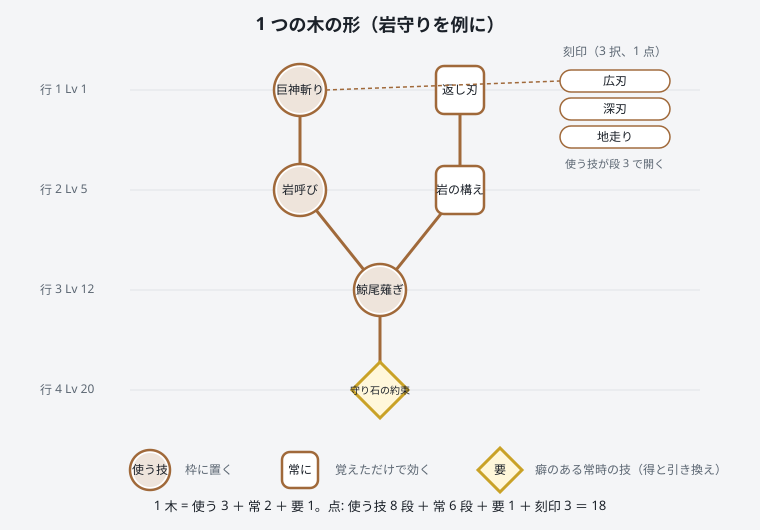
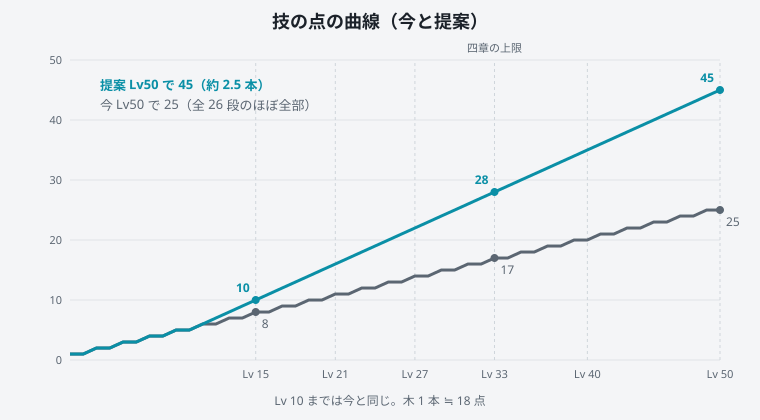
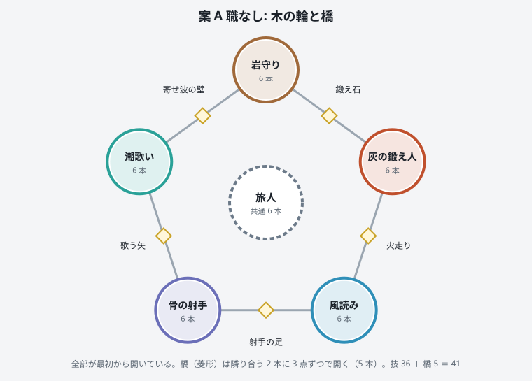
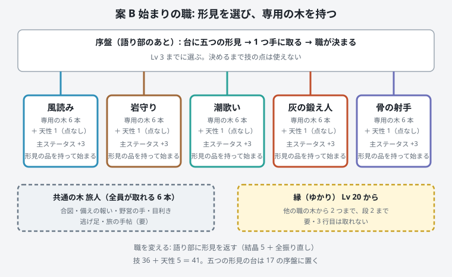
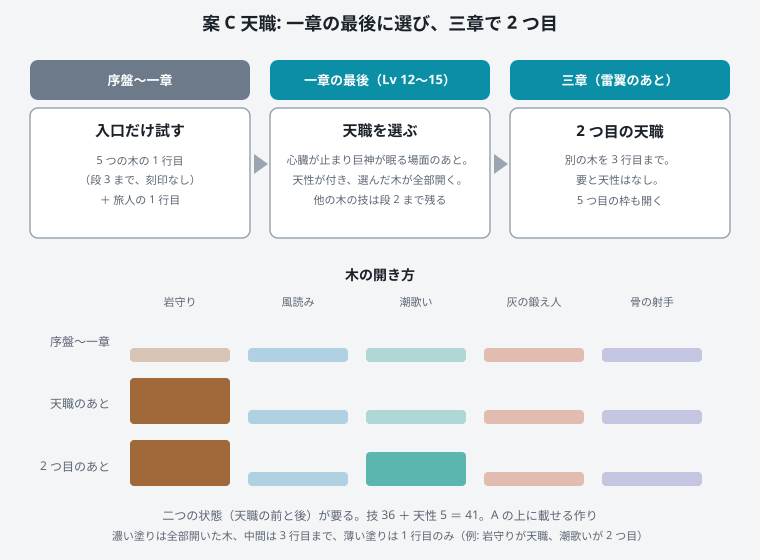

選定ページ: 声 第 4 弾 ／ ビルドと職（このページ）
試遊の声: 「もっとスキルを増やしてもいいかも。遊び方に種類が出る（初期職業の有無は悩む）。もし初期職業を選べるなら、Diablo くらいビルドを作り込めると面白い。」 詳しい設計は docs/design/27_builds_and_classes.md。


| 木（6 本ずつ） | 役目 | 技（要は太字） |
|---|---|---|
| 岩守り | 壁 | 巨神斬り・鯨尾薙ぎ・岩呼び（狙いを引く）／返し刃・岩の構え／守り石の約束（仲間の傷の 10% を肩代わり） |
| 風読み | 近い攻め・機動 | 踏み込み・跳び退き・風裂き／軽業・見切り（予告をよけた直後に速くなる）／孤風（一人のとき強い） |
| 潮歌い | 支え・崩し | 守りの唄（吸収ハート）・引き潮・巡りの唄（マナ）／凪の心得・波紋／共鳴の声（仲間の数で強い） |
| 灰の鍛え人 | 近い攻め・火 | 焼き入れ・熾火の槌・灰散らし／熾の心得・炉の記憶／鍛え人の目（武器の強化段階が技に効く） |
| 骨の射手 | 遠い攻め・罠 | 雲穿ち・天の驟雨・骨の罠／遠矢の心得・鷹の目／静かな弦（止まって引くと強い） |
| 旅人（共通） | 全員 | 合図（標を付ける）／備えの報い・野営の手・目利き・逃げ足／旅の手帖（どこでも刻印を切り替え） |
そのほか: 刻印 48（第一段階は 30）／武器の型（重・長・速・遠・守）／装備の「木の印」5 種と、伝説の武器が技の刻印を別物にする「書き換え」8 本／刻印の付け替えは結晶 1・型の保存 2 つ／ステータスの 15・30 に小さな分かれ目。回復と無敵は作らず、支えは吸収ハート（小）とマナまで。

K 画面: 輪の星図で木を選び、中央に木の 4 行、右に説明と刻印、下に枠と型。作業量の目安 14 セッション。強み: 序盤に触らない・作りが素直。弱み: 名乗りが弱く、最適解で似通う。

K 画面: 職の印と大きな職の木、旅人・縁のつまみ。作業量 18。強み: 最初から名乗れて、パーティの役目が見える。弱み: 序盤（17）へ選びが入る。選ぶ時点では違いが分かりにくい。

K 画面: 一章の前は簡単な形（5 つの木の入口）、天職のあとは B と同じ形。作業量 19（A の上に 5 を足す）。強み: 序盤に触らず、物語の拍で選ぶ。10 時間遊んだあとなので選びに根拠がある。弱み: 二つの状態と演出が要る。
K 画面（案 C・天職のあと） ┌ 刻まれた技 ──────────────── 天職: 岩守り ── 点 12 ┐ │ [旅人][縁/2つ目] 岩守りの木（4 行） │ 右: 名前・段・消費・待ち │ ●巨神斬り ■返し刃 行 1 │ 刻印 [広刃][深刃][地走り] │ ●岩呼び ■岩の構え 行 2 │ 型: 重で +10% │ ●鯨尾薙ぎ 行 3 │ 書き換え: （持っている伝説） │ ◆守り石の約束 行 4（Lv 20） │ │ 枠 R G V Z (X は三章) 型 1｜型 2 振り直す(二度) │ └────────────────────────────────────────────────────┘
C。序盤の拍子（試遊で指摘があった）に触らず、職を物語の拍（巨神が眠る）に載せられる。A の上に載せる作りなので、A まで作って止めても無駄がない（14 → 19）。
選ぶと自動で保存されます（db の choices、id は build_1〜build_6）。メモは任意です。